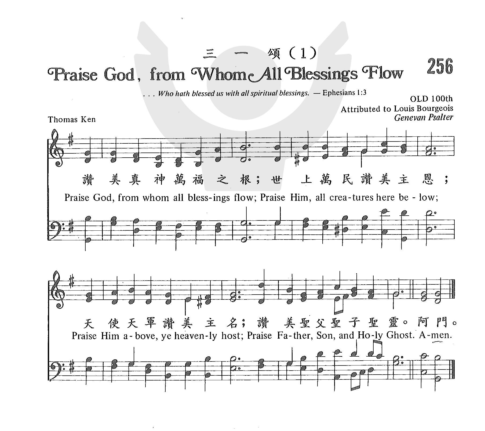
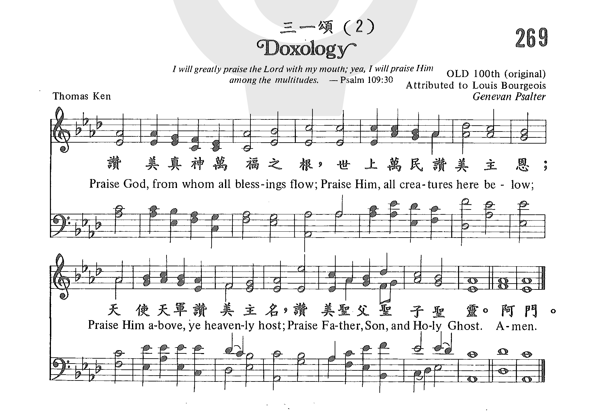
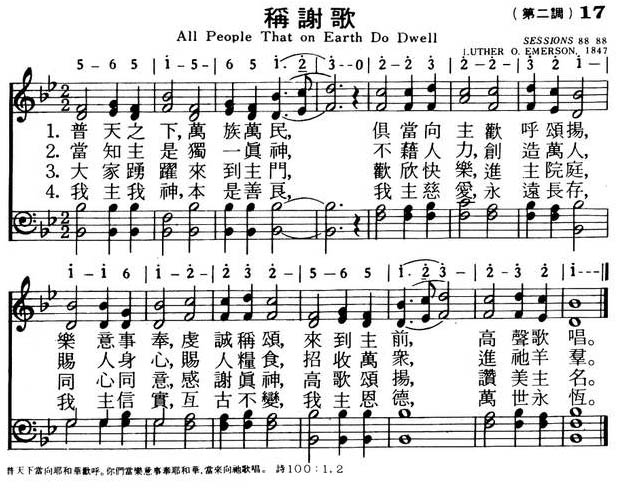
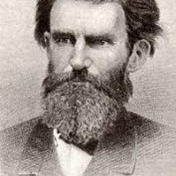

0570 From All That Dwell Below the Skies _Isaac
Watts 稱謝歌 LASST UNS ERFREUEN
▲
| 簡介
From All That Dwell Below the Skies (Psalm 117) |
| Because Psalm 117 contains only two
verses, Watts’s paraphrase had only two stanzas. Most later hymnals have
created or borrowed additional stanzas, like the one included here, to
enlarge the hymn. Perhaps the best solution is found by adding
Alleluias, as this tune invites. |
|
OLD HUNDREDTH
LASST UNS ERFREUEN
DUKE STREET
|
【稱謝歌】 詩集：生命聖詩，27
From all that dwell below the skies 030 萬靈頌讚
|
|
All people that on earth do dwell
Author: William Kethe
1 All people that on earth do dwell,
sing to the LORD with cheerful voice.
Serve him with joy, his praises tell,
come now before him and rejoice!
2 Know that the LORD is God indeed;
he formed us all without our aid.
We are the flock he surely feeds,
the sheep who by his hand were made.
3 O enter then his gates with joy,
within his courts his praise proclaim!
Let thankful songs your tongues employ.
O bless and magnify his name!
4 Because the LORD our God is good,
his mercy is forever sure.
His faithfulness at all times stood
and shall from age to age endure.
1 From all that dwell below the skies,
Let the Creator's praise arise;
Let the Redeemer's name be sung
Through ev'ry land by ev'ry tongue.
2 Eternal are Thy mercies Lord;
Eternal truth attends Thy Word;
Thy praise shall sound from shore to shore
Till suns shall rise and set no more.
Baptist Hymnal, 2008
Praise God, from whom all blessings flow (Ken)
Author: Thomas Ken (1674)
Praise God, from whom all blessings flow;
Praise Him, all creatures here below;
Praise Him above, ye heav'nly host;
Praise Father, Son, and Holy Ghost.
Amen.
Baptist Hymnal, 1991
|
但願天下千萬生靈，
齊聲稱頌造化至尊！
哈利路亞！哈利路亞！
處處地方，
人人舌上，高歌讚美救主聖名。哈利路亞！
哈利路亞!！哈利路亞！
哈利路亞！哈利路亞！
我主慈愛，萬古長存，
我主真道，萬古流行！
哈利路亞！哈利路亞！
地角天涯，皆當歌頌，
直到紅日不復升沉。
哈利路亞！哈利路亞！
哈利路亞！哈利路亞！
哈利路亞！
世界萬民同唱高聲 普天之間同讚聖名
樂意歌唱 敬虔奉獻 寶座前樂韻奏共鳴
讚美父神惟聖與真 一手始創寰宇 世人
每天供應 每時導引 招聚眾生永屬羊群
以讚頌入門敬拜主 歡欣高唱進祂院宇
永不止息讚揚 述著 不用猶豫 彷彿多語
至美至善 宏愛滔天 關孤 恤寡 憐憫 顧念
至高真理 信實盡見 千秋百載 古今不變
颂主新歌 017称谢歌（第二调）
1.普天之下 万族万民
俱当向主欢呼颂扬
乐意事奉 虔诚称颂
来到主前高声歌唱
2.当知主是独一真神
不藉人力创造万人
赐人身心 赐人粮食
招收万众进他羊群
3.大家踊跃来到主门
欢欣快乐进主院庭
同心同意感谢真神
高歌颂扬 赞美主名
4.我主我神本是善良
我主慈爱永远长存
我主信实亘古不变
我主恩德万世永��
|
|
https://www.mred365.cn/szxg/7019.html
016称谢歌（第一调）
https://www.zanmeishige.com/tab/25614.html?songbook=1&index=256
第256首 -三一颂(1)

https://www.zanmeishige.com/tab/25638.html?songbook=1&index=269
第269首 -三一颂(2)

https://www.mred365.cn/szxg/7020.html 017称谢歌（第二调）


|
|
|
|
OLD HUNDREDTH
LASST UNS ERFREUEN
DUKE STREET

Most of us have, at some point, made or seen the paper cut-outs of a long chain
of people, connected by hands and feet. Or we’ve seen images of a globe with a
circle of people from around the world surrounding it, hands grasped in equality
and love. This image is evoked once more in the words of Isaac Watts’ hymn,
"From All That Dwell Below the Skies". It is a beautiful thing to imagine a
whole world of people, stretching across deserts, over mountains, deep in a
forest, sitting on ships in the ocean, and lining the streets of a city. It’s
even more powerful to envision them with hands joined together and a song of
praise on their lips. What is most astonishing is that this vision, more
beautiful and powerful than we could ever imagine, will be fully realized. Every
voice will be lifted in a cry of praise to our Redeemer. And until that day,
though some voices are silent, we know that the whole earth resounds with a song
that could only be sung in love of the Creator.
Author: William Kethe
Tune: OLD HUNDREDTH
Published in 641
hymnals

https://allpoetry.com/William-Kethe
The psalmist gave Psalm 100 the title, “A psalm of thanksgiving.” The opening
verses tell us how this thanksgiving is to be rendered: boldly and jubilantly.
“Make a joyful noise to the Lord, all the earth! … Come into his presence with
singing!” (Psalm 100:1,2 ESV) The final stanza of this hymn, which is a
paraphrase of Psalm 100, tells us why God deserves such unabashed worship: “His
truth at all times firmly stood, And shall from age to age endure.” Sing this
psalm with your whole being, for our good God deserves nothing less than
whole-hearted praise.
Praise God From Whom All Blessings Flow
Author: Thomas Ken (1674)
Tune: OLD HUNDREDTH

This short text calls upon all of creation, on earth and in heaven, to offer
praise to the Trinity, in recognition that all good things come from God.
| 030 |
萬靈頌讚 |
From All That Dwell Below The Skies |
聖父 |
030 |
http://www.mbcsfv.org/chinese/library/hymncampanions/027.html
三一頌
Doxology
(如果你看不到媒體播放器, 請直接點擊歌名)
讚美真神萬福之根，
地上生靈當讚主恩，
天上萬軍頌讚主名，
讚美聖父，聖子，聖靈。
阿們。
三百多年來，千萬信徒在每週祟拜時唱這首詩。
它祇有短短四句的詩，節錄自詩篇一百四十八篇和馬太福音廿八章十九節。 詩的含意深邃，莊嚴，將三位一體表達無遺。
本詩作者甘多馬（Thomas Ken,
1637-1711）生於英國，自幼就是孤兒，由他長姐和姐夫撫養長大。 他姐夫是當代名人，他的道德學識才智，深深地薰陶多馬，養成他剛毅耿直的個性。
多馬畢業自牛津大學，1662年被按牧。
他的牧會生涯可說多姿多彩，他常指責社會的腐敗和不公。 1679年他奉派赴荷蘭海牙，出任宮廷牧師，翌年因他直言當朝的糜爛生活而被遣返國。
甘多馬返英後，英皇查利二世封他為皇家牧師，可是他還是一本初衷，時常譴責皇家失德之處。 查利二世雖常被他的諫言指責，卻賞識和尊敬他的膽識。
每當崇拜時刻，他總是說：「我要去聽多馬數說我的過錯。」 在甘多馬出任威爾斯主教後十二天，查利二世去世，詹姆士繼位。
甘多馬因拒絕宣讀皇家特赦文告，和其他六位聖公會主教被囚於倫敦塔，最後被迫辭職。 晚年他隱居鄉間，寫詩作書。
他曾為曼徹斯特大學生寫了一本「禱告手冊」，內有歌尾都以「三一頌」為結束早晚靈修的聖詩。
有一天約翰衛斯理在一所古舊的大房子內講道，當時聽眾有數百人。 突然間整個屋頂塌下，把全體會眾埋在土中。
衛斯理從土中爬出，看到人上壓人，但沒有一人喪命，於是他大喊：「 神與我們同在，讓我們來唱三一頌來讚美祂。」群眾有的撫著傷口有的熱淚盈眶，同聲齊唱，與主日祟拜時歡唱時的感受迴然不同。
本詩歌的曲調有多種，最常用的，是取自包傑士（Louis Bourgeois, 1510-1561）的「舊一百篇」。
https://youtu.be/jtbw79gqUjs Variations on a hymn by louis
bourgeois


https://walkerhomeschoolblog.wordpress.com/2018/11/16/louis-bourgeois-and-old-hundred/
包傑士是法國人，1541年他遷居瑞士日內瓦，當時日內瓦是改革宗教會的中心。
1545年他任教會詩班的指揮，教會請他特別為押韻的詩篇作曲，當時崇尚聖詩韻律要齊聲，他卻重視美妙的和聲。 他特別關心聖樂教育，對基督教的聖樂貢獻很大。
https://worshipandchurchmusic.wordpress.com/2016/10/25/%E7%94%A8%E3%80%8A%E4%B8%89%E4%B8%80%E9%A0%8C%E3%80%8B%E4%BE%86%E6%95%AC%E6%8B%9C%E4%B8%BB/
用《三一頌》來敬拜主
曾浩斌 Herbert Tsang
「讚美真神萬福之根，
地上生靈當讚主恩，
天上萬軍頌讚主名，
讚美聖父，聖子，聖靈！阿們。」
（《三一頌》生命聖詩536首）
每星期在很多不同的教會崇拜當中，都會可能會唱這一首的大家都熟悉的三一頌（Doxology）。不過，不同的教會有時會在不同的時候唱這首三一頌。筆者親身見過的有：在會眾唱詩的時候、在收奉獻之後、或者在崇拜完結和祝福之前…等等。雖然可能每星期都會用這一首的大家都熟悉的詩歌，不過可能大家對於它的運用和歷史未必熟悉。
《三一頌》的種類和歷史背景
Doxology一字源於希臘文解釋作榮耀doxa 的字，（Doxology原由希臘文doxologia）通常是一些讚美和榮耀的字句，並且有用三一上帝的格式。在這個格式�堶情A很多時提到或者用「榮耀」（glory）或「讚美」開始。通常基督教熟悉的三一頌有兩種：小三一頌“lesser
doxology”和大三一頌“greater doxology” 。
小三一頌又稱為《榮耀頌》（Gloria Patri），通常都會加插在朗讀詩篇或者頌歌（canticles）之後。現在，唱《榮耀頌》的教會比會唱《三一頌》的更少。通常只會在一般著重傳統禮儀不留的教會，例如中華基督教會、聖公會等才會見到。天主教稱為《聖三光榮經》，與《天主經》、《聖母經》並為常用祈禱經文之一。
根據聖公會《公禱書》版本，「但願榮耀歸於聖父、聖子、聖靈，始初如此，現今如此，以後亦如此，永無窮盡，阿們。」《榮耀頌》有很長的使，在教父克利門Clement
of Alexandria第二世紀的著作已經有提及。
大三一頌又稱為《榮歸主頌》或者《榮耀全歸至高真神》（Gloria be to God on
High）並且早在第四世紀的下半部已經出現。到了第五世紀的文獻顯示，特別在拜占庭禮儀（Byzantine
rite）中使用。從第六世紀開始在羅馬天主教的彌撒開始已經出現，直到十一世紀我們現在用的格式才穩定下來。另外，從路德宗的禮儀（Lutheran
liturgy），《榮歸主頌》通常會在幾個地方出現：進堂禮之後和宣召祈禱之前、作為唱贊美詩與禱告的籌備。
對於我們熟悉的《三一頌》歌詞取材自詩篇148篇和馬太福音28章十九節。歌中對三一神，特別提及聖父，聖子，聖靈，付上崇敬和讚美。三一頌的詞由甘多馬主教（Thomas
Ken, 1637-1711）所作，並且在1709年出版。
早在1674年甘多馬主教出版了“A Manual of Prayers for the Use of the Scholars of Winchester
College” 【給溫徹斯特大學的學者使用的祈禱手冊】。其中甘主教特別提到讀者應該時常都要唱頌日晨頌（Morning hymn）和晚禱頌（Evening
hymn）。另外在1695年的版本，以上三一頌歌詞都成為了以下三首詩歌的詩句最後一節（
“Awake, My Soul, and with the Sun,”
“All Praise to Thee, My God, This Night,” and
“My God, I Now from Sleep Awake” ）。
在1709年的版本，甘主教將“Praise him above y’ Angelick Host”一個句子更改為
“Praise him above, ye heavenly host,”
這樣就成了 我們熟悉的第三句“天上萬軍頌讚主名” 。[1]
我們現在熟悉的《三一頌》配上甘多馬主教的詞，就是Louis Bourgeois（1510 – 1561）名稱為Old Hundredth的曲調。Old
Hundredth原指「英文日內瓦詩篇集」（Genevan Psalter），的第100首。
結語
《三一頌》的如果用於總結崇拜的時候，能夠叫我們再一次重新調整我們專注於三一上帝的榮耀，並且認定祂的作為。在祝福之前，《三一頌》幫助我們仰望祂、並且等待祂的差遣。祝福時候，我們被提醒三一上帝的恩典繼續與我們眾人同在，會眾可以用信心領袖勇敢並且有平安的去事奉主。
一般來講，《三一頌》無論是那個格式，都是以讚美將榮耀歸給三一上帝為主要目的。所以根據歷史文獻，聖詩的背景和用途，唱《三一頌》的時候需要以感恩和讚美的聲音歌唱。默默的低下頭並且用弱小的聲音去唱，不單止和歌詞的內容並不適合，更加不能夠得到讚美和感恩的的。
熟悉一首聖詩的背景，不但只能夠加深我們對與作曲和作詞者的原意，更加能夠防止我們錯誤的運用聖詩。現代人最常犯的錯誤就是自我中心的意識極度膨脹，往往將二千多年基督教文化諸於腦後，認為個人現在這一刻的領受才是正確的。容許筆者大膽的挑戰，不要將自己看得太重。難道二千多年的基督教文化，從耶穌基督就到你呢？那些如雲的見證人在那�堜O？難道在他們身上我們沒有學習的機會呢？
聖詩是我們基督教屬靈的遺產，願我們都緊記「…我們既有如此眾多如雲的證人， 圍繞著我們，就該卸下各種累贅和糾纏人的罪過，以堅忍的心，跑那擺在我們面前的賽程，
雙目常注視著信德的創始者和完成者耶穌：衪為那擺在衪面前的歡樂，輕視了凌辱，忍受了十字架，而今坐在天主寶座的右邊。」希伯來書12:1-2
參考
Daniel Evan. The Prayer-Book. Its History, Language, and Contents, London: UK,
Wells Gardner, Darton & Co., 1892.
【完】
©作者保留本文版權，不經書面同意請勿轉載。
[1] James D. Smith III, “Where Did We Get The Doxology?”, Golden Age of Hymns,
Issue 31, 1991. Accessed April 19, 2011, http://www.ctlibrary.com/ch/1991/issue31/3118.html
曾浩斌。（用《三一頌》來敬拜主）。《真理報》。卷19，期5（2011年5月）：頁15。
http://www.xueshengshi.com/?p=7928
简介（一） （来源：《赞美诗新编史话》）
经文：“我的心哪，你要称颂耶和华，凡奉我里面的，也要称颂他的圣名” (诗103：1)。
《三一颂》的词是英国圣公会主教托马斯.肯 (Thomas Ken，1637一
1711)所写的名歌的最后一节。编者在介绍《荣耀颂》(第392首)时，已指出，教会经常用以作为读唱诗篇的结束词。
折叠 全文
人气： 1,119
在相当长的一段时期里，基督徒所自编的新圣诗，也常以大意相同的《荣耀颂》作为最后一节。肯主教于
1695年还是中学校长时，编印了一本祷文和诗歌，供学生灵修、礼拜选用。其中有一首为早晨用的，其第一节如下：我灵速醒，与日竞争，竭力尽你一天责任；驱除惰性，欢然奋兴，清晨向主敬献虔诚。《普天颂赞》(旧版)第375首还有一首是为晚间用的，其第一节如下：今夕向主感谢称扬，因主日间赐我明光；
求用全能羽翼覆我，覆我护我，万王之王 !
《普天颂赞》(旧版)第389首
这两首诗的最后一节都以这首《三一颂》作为结束。以后它被各教会用来代表《荣耀颂》。所以它是英文中最早的一首圣诗，又是最常被人唱颂的一首圣诗。
按《三一颂》这个调乃布儒瓦 (L．Bourgeois，1510一1561)为《日内瓦诗篇》第100篇所谱的曲调，所以至今仍通称为“老
100篇”。它因被配合到基督教最流行的《三一颂》，也就成为基督徒家喻户晓的一首圣诗曲调，用于《新编》第 15首《称谢歌》也极其合宜。
布儒瓦是法国人，生于巴黎。他是一位音乐家，应加尔文
(见第5首注①)之请来日內瓦负责《日内瓦诗篇》的音乐编辑。他在日内瓦兼任圣彼得堂唱诗班主任。他大胆地引用了各种民间通俗旋律、歌曲，供教会礼拜时信徒唱诵，流传至今的除第399首的《老100篇》外，还有《阿们颂》等多首曲调。
http://www.xueshengshi.com/?p=4628
简介（一） （来源：《岁首到年终》）
三一颂 Doxology
Thomas Ken, 1757
普天下当向耶和华欢呼。你们当乐意事奉耶和华，当来向祂歌唱。（诗 100:1-2）
眞基督徒所信的唯一眞神在本性上是三位一体的。这是人的理智所不能了解的；在宇宙中也没有任何其它的东西有此本性，任何的描绘也不能表示清楚三位一体的概念。有许多人想法去描写三位一体，但均显出不够完全。
三位一体就是圣父、圣子和圣灵。虽然圣经没有使用「三位一体」这个词汇，但它的道理郄存在于整本圣经之中。我们可以这么说，上帝是
- 我们接受救恩的所有福气之源头，祂就是天父，那位供应者；
- 一位中保，因着祂救恩工作得以完成，祂就是耶稣基督；
- 一位代理者，借着祂，上帝的救恩得以有效并能完成。祂就是圣灵。
这首「三一颂」是一切圣诗中最普遍的一首，三百余年来被全世界最大多数的基督徒唱颂着。对三一教义之教导，它远超过所有的神学书籍所做的。
本诗作者 Thomas Ken 1637 年出生于美国 Little Berkhampstead
幼为孤儿，由其大姊和姊夫抚养成人。牛津大学毕业后，1662 年按立荣膺圣职，历任 Brixton，Isle of Wight 诸堂牧职，并作了很多圣诗。
Ken 氏一生以刚毅直言出名。常指责社会的腐败及不公义，甚至国王查理二世亦不例外。此举深获国王之尊敬，每主日礼拜时，常被邀前往讲道。1679
年奉命前往海牙任宫庭牧师。
查理王去世后，雅各王继位，逼迫 Thomas Ken，最后虽被迫辞职，亦心甘情愿。晚年与友人退居乡间，时常写诗自娱。1711 年蒙召息劳
，在世上过了七十四年的奋斗生活，举止言行，诚系神之忠仆。
赞美一神万福之源，
天下生灵都当颂言；
天上万军也赞主名，
同心赞美父子圣灵。阿们。
＊救主的伟大甚至扩展如不列颠之远，上升如诸天之高，下降如阴阁之低。── 俄利根
https://hymnary.org/text/from_all_that_dwell_below_the_skies
From all that dwell below the skies. I. Watts. [Psalm cxvii.]
This paraphrase appeared in his Psalms of David, 1719, as follows:—
"Psalm cxvii. Long Metre.
i.
"From all that dwell below the Skies
Let the Creator's Praise arise:
Let the Redeemer's Name be sung
Thro' every Land, by every Tongue,
ii.
“Eternal are thy Mercies, Lord;
Eternal Truth attends thy Word;
Thy Praise shall sound from Shore to Shore
Till suns shall rise and set no more."
In this its original form this hymn is in extensive use in all English-speaking
countries. It has also been translated into several languages, including Latin,
by Bingham, in his Hymnologia Christiana Latina, 1871:—" Magna
Creatoris cunctis alturn aethera subter."
2. A second form of the hymn appeared about 1780, under the following
circumstances. John Wesley, in the Preface to his Pocket Hymn-book for the
Use of Christians of All Denominations, dated Nov. 15, 1786, says:—
”A few years ago I was
desired by many of our preachers to prepare and publish a small Pocket
Hymn-book, to be used in common in our Societies. This I promised to do, as
soon as I had finished some other business, which was then on my hands. But
before I could do this, a Bookseller stepped in, and without my consent or
knowledge, extracted such a Hymn-book chiefly from our works, aud spread
several editions of it throughout the kingdom. Two years ago I published a
Pocket Hymn-book according to my promise. But most of our people were supplied
already with the other Hymns. And these are largely circulated still. To cut
off all pretence from the Methodists for buying them, our Brethren in the late
Conference at Bristol advised me to print the same Hymn-book which had been
printed at York. This I have done in the present volume; only with this
difference," &c.
The hymn-book here referred to is:— A Pocket Hymn-book designed as a
constant Companion for the pious, collected from Various Authors. York, R.
Spence [c. 1780], 5th edition, 1786.
From this hymn-book J. Wesley reprinted in his Pocket Hymn-book, 1786,
Watts's “From all that dwell below the skies," with these additional lines in
one stanza:—
“Your lofty themes, ye
mortals, bring,
In songs of praise divinely sing;
The great salvation loud proclaim,
And shout for joy the Saviour's name:
In ev'ry land begin the song;
To ev'ry land the strains belong;
In cheerful sounds all voices raise,
And fill the world with loudest praise."
The original, together with these lines from the York book, passed into several
collections as a hymn in 4 stanzas of 4 lines. The cento in this form is in
common use in Great Britain and America.
3. A third form of the text is also in common use. It appeared in the 1830 Supplement to
the Wesleyan Hymn Book, No. 690. It is composed of Watts's original,
four lines from the York Pocket Book text, and Bp. Ken's doxology,
"Praise God from whom all blessings flow," &c. This was omitted in the 1875
revised edition of the Wesleyan Hymn Book, in favour of Watts's
original text.
-- John Julian, Dictionary of Hymnology (1907)
Most of us have, at some point, made or seen the paper cut-outs of a long chain
of people, connected by hands and feet. Or we’ve seen images of a globe with a
circle of people from around the world surrounding it, hands grasped in equality
and love. This image is evoked once more in the words of Isaac Watts’ hymn,
"From All That Dwell Below the Skies". It is a beautiful thing to imagine a
whole world of people, stretching across deserts, over mountains, deep in a
forest, sitting on ships in the ocean, and lining the streets of a city. It’s
even more powerful to envision them with hands joined together and a song of
praise on their lips. What is most astonishing is that this vision, more
beautiful and powerful than we could ever imagine, will be fully realized. Every
voice will be lifted in a cry of praise to our Redeemer. And until that day,
though some voices are silent, we know that the whole earth resounds with a song
that could only be sung in love of the Creator.
Text:
Isaac Watts wrote this text for his 1719 publication The Psalms of David,
Imitated. It was one of three paraphrases he wrote based on Psalm 117, and
it was first published in two verses. In 1780 John Wesley published a version
with an added two verses. These verses are included in the United Methodist
Hymnal, Trinity Hymnal, and Presbyterian Hymnal. A third form
of the hymn originated with the doxology, “Praise God from whom all blessings
flow,” as a final verse. This verse is included in the Lutheran Hymnal and Episcopal
Hymnal. The original two verses are found in the Baptist Hymnal 2008.
Note that Watts uses chiastic structure here at its finest: the first and last
line mirror each other, and the middle two are synonymous.
Tune:
LASST UNS ERFREUEN
Published in 403
hymnals

There are three tunes that are split almost equally in their use with this hymn
text. The first is LASST UNS ERFREUN, commonly associated with the hymn, “All
Creatures of our God and King.” When this tune is used, “Alleluias” are added to
the text, as in “All Creatures.” Another tune used is OLD HUNDREDTH, the classic
doxology tune. Finally, you could use DUKE STREET, commonly associated with
‘Jesus Shall Reign Where’er the Sun,” another of Watt’s famous texts.
Information on performing these tunes can be found on the featured hymn pages
for “All Creatures” and “Jesus Shall Reign.”
https://youtu.be/VZjTTAT6Tyw
All Creatures of Our God and King (Lasst uns erfreuen)
https://youtu.be/Yp0M5QgufUw
The Mormon Tabernacle Choir and Orchestra at Temple Square perform Mack
Wilberg's arrangement of "From All That Dwell Below the Skies" composed by John
Hatton with lyrics by Isaac Watts
https://youtu.be/kLp1ppEkY6g
The Tabernacle Choir at Temple Square sings "From All That Dwell Below the
Skies." October 2019 General Conference
Notes
LASST UNS ERFREUEN derives
its opening line and several other melodic ideas from GENEVAN 68 (68). The
tune was first published with the Easter text "Lasst uns erfreuen herzlich
sehr" in the Jesuit hymnal Ausserlesene Catlwlische Geistliche
Kirchengesänge (Cologne, 1623). LASST UNS ERFREUEN appeared in later
hymnals with variations in the "alleluia" phrases.
The setting is by Ralph
Vaughan Williams (PHH
316); first published in The English Hymnal (1906), it has
become the most popular version of LASST UNS ERFREUEN. In that hymnal the
tune was set to Athelstan Riley's "Ye watchers and ye holy ones" (thus it is
sometimes known as VIGILES ET SANCTI).
In this hymn a great text
is matched by an equally strong and effective tune. Try these two
possibilities of antiphonal singing: divide stanzas between women and men,
or assign the verses to one group and the "alleluias" to another.
Accompanists can signal such antiphonal effects in their use of varied
registration. Registration changes also will help interpret the text; for
example, the third stanza can begin with a lighter registration and move to
a "blazing" sound on the second half.
Try having the
congregation sing some stanzas unaccompanied but add organ (with full stops)
at the "alleluias." Or, for a fine effect, have the congregation sing some
stanzas in unison with accompaniment and the choir sing the "alleluias" in
harmony unaccompanied, as indicated in the Psalter Hymnal. It
is musically correct and pastorally wise to observe a fermata at the end of
the second "alleluia" on the second system by turning that half note into a
whole note. No ritard is necessary at the end of the hymn; it is built right
into the final "alleluia" phrase. Try adding instruments to enhance this
magnificent tune; there are several fine concertato versions in print that
involve trumpets and/or full brass scoring.
--Psalter Hymnal
Handbook
OLD HUNDREDTH
Composer (attributed to): Louis Bourgeois (1551)
Published in 1151
hymnals

Notes
This tune is likely the
work of the composer named here, but has also been attributed to others as
shown in the instances list below.
According to the Handbook
to the Baptist Hymnal (1992), Old 100th first appeared in the Genevan
Psalter, and "the first half of the tune contains phrases which may
have existed in plainsong and folk song for centuries. The latter part of
the tune and its overall form is the work of Louis Bourgeois, John Calvin's
musical collaborator in the formation of the Genevan Psalter." (p.
88)
https://youtu.be/_o7Sc5gqy1I
【稱謝歌】（向主歡呼頌揚） (All People that on Earth Do Dwell) 專輯：普頌薪傳樂曲：Fr. Genevan Psalter
Attr. To Louis Bourgeois 1551 Arr. Ralph Vaughan Williams
When/Why/How:
Albert Bailey describes this hymn as “the classic of English doxologies” (The
Gospel in Hymns, 57). In fact, it could be sung as a doxology, an opening
hymn, or a hymn of response to a message on God’s goodness and mercy. It could
be sung as the doxology during a service celebrating diversity and the beauty of
all of God’s people and creation.
https://en.wikipedia.org/wiki/Louis_Bourgeois_(composer)

From Wikipedia, the free encyclopedia

Hand and signature of Loys Bourgeois (Genève, 1551)
Loys "Louis" Bourgeois (French: [buʁʒwa];
c. 1510 – 1559) was a French composer
and music
theorist of the Renaissance.
He is most famous as one of the main compilers of Calvinist hymn
tunes in the middle of the 16th century. One of the most famous
melodies in all of Christendom,
the Protestant doxology known
as the Old
100th, is commonly attributed to him.

Title page of Loys Bourgeois "Response à la seconde apologie"
(Lyon, 1554)
Next to nothing is known about his early
life. His first publication, some secular chansons,
dates from 1539 in Lyon.
By 1545 he had gone to Geneva (according
to civic records) and become a music teacher there. In 1547 he was granted
citizenship in Geneva, and in that same year he also published his first
four-voice psalms.
In 1549 and 1550 he worked on a collections
of psalm-tunes,
most of which were translated by Clément
Marot and Théodore
de Bèze. The extent to which he was composer, arranger or compiler was
not certain, until a long-lost copy of the Genevan
Psalter of 1551 came to the library of the Rutgers
University. In an Avertissement (note) to the reader Bourgeois
specifies exactly what his predecessors had done, what he had changed and
which were his own contributions. He is one of the three main composers of
the hymn
tunes to the Genevan Psalter.
Unfortunately, he fell foul of local musical
authorities and was sent to prison on 3 December 1551 for changing the
tunes for some well-known psalms "without a license." He was released on
the personal intervention of John
Calvin, but the controversy continued: those who had already learned
the tunes had no desire to learn new versions, and the town council
ordered the burning of Bourgeois's instructions to the singers, claiming
they were confusing. Shortly after this incident, Bourgeois left Geneva
never to return: he settled in Lyon, his Geneva employment was terminated,
and his wife tardily followed him to Lyon.
While in Lyon, Bourgeois wrote a fierce
piece of invective against the publishers of Geneva. His daughter was
baptized in Paris in May 1560 (as a Catholic),
and also in 1560 a Parisian publisher posthumously printed a volume of his
secular chansons – a form he had condemned as "dissolute" during his
Geneva years.
Music and influence[edit]

Title page of Loys Bourgeois "Pseaulmes LXXXII" (Lyon : 1554)
Louis Bourgeois is the one most responsible
for the tunes in the Genevan
Psalter, the source for the hymns of
both the Reformed
Church in England and the Pilgrims in
America. In the original versions by Bourgeois, the music is monophonic,
in accordance with the dictates of John Calvin, who disapproved not only
of counterpoint but
of any multiple parts; Bourgeois though did also provide four-part
harmonizations, but they were reserved for singing and playing at home.
Many of the four-part settings are syllabic and chordal, a style which has
survived in many Protestant church services to the present day.
Of the tunes in the Genevan Psalter, some
are reminiscent of secular chansons, others are directly borrowed from the
Strasbourg Psalter; The remainder were composed by successively Guillaume
Franc, Louis Bourgeois and Pierre
Davantès. By far the most famous of Bourgeois' compositions is the
tune known as the Old
100th.
References
and further reading[edit]
- Frank Dobbins, "Loys Bourgeois", in The
New Grove Dictionary of Music and Musicians, ed. Stanley Sadie. 20
vol. London, Macmillan Publishers Ltd., 1980. ISBN 1-56159-174-2
-
Gustave Reese, Music in the Renaissance. New York, W.W.
Norton & Co., 1954. ISBN 0-393-09530-4
- Frank Dobbins, "Loys Bourgeois", Grove
Music Online ed. L. Macy (Accessed March 29, 2005), (subscription
access)
- Harold Gleason and Warren Becker, Music
in the Middle Ages and Renaissance (Music Literature Outlines Series
I). Bloomington, Indiana. Frangipani Press, 1986. ISBN 0-89917-034-X
- Pseaumes Octantetrois de David, mis
en rime Françoise par Clément Marot et Théodore de Bèze, imprimé par
Jean Crespin à Genève 1551, Reproduced from the Rutgers University
copy, 1973 X BS 1443.FSM332
- Pierre Pidoux, Le Psautier Huguenot,
VOL I/II
External links[edit]